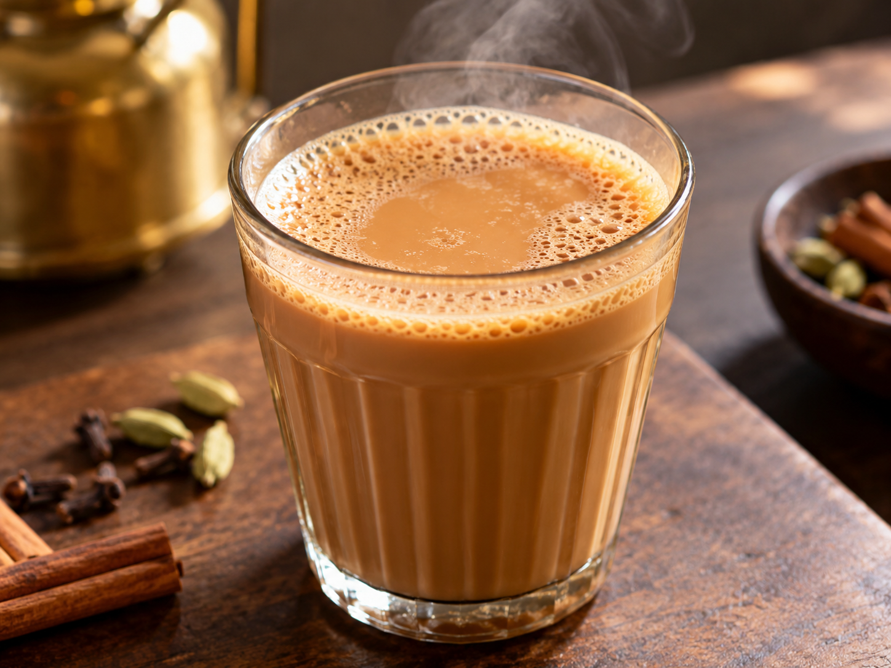
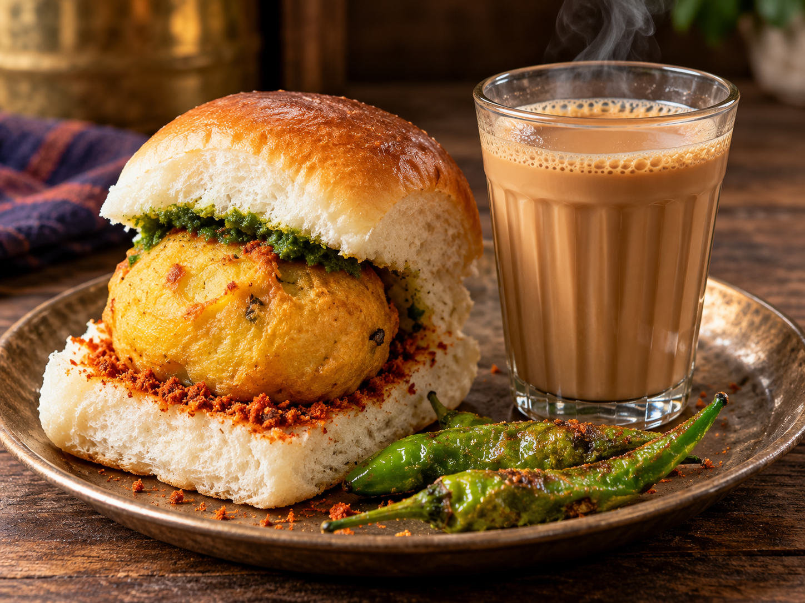
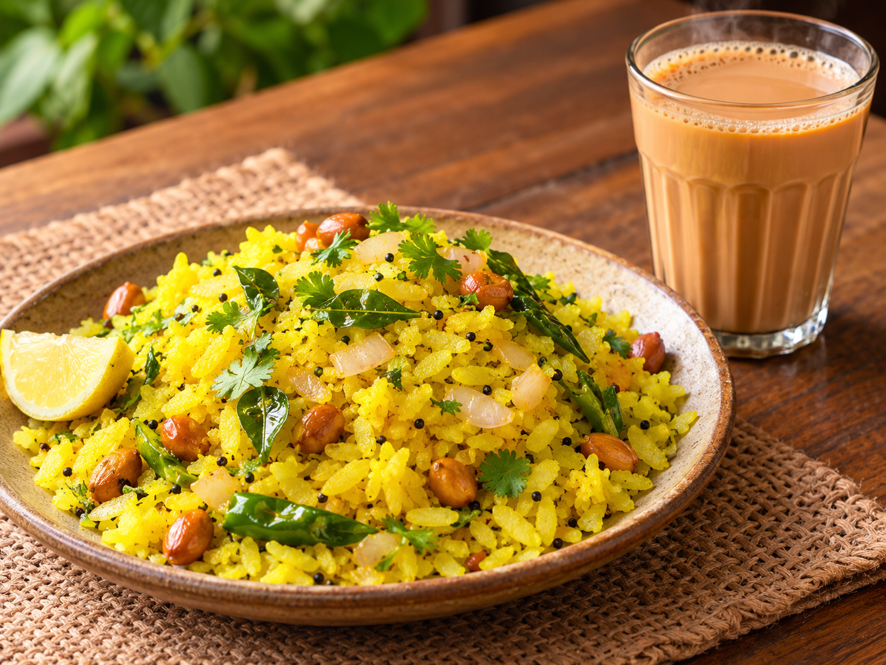
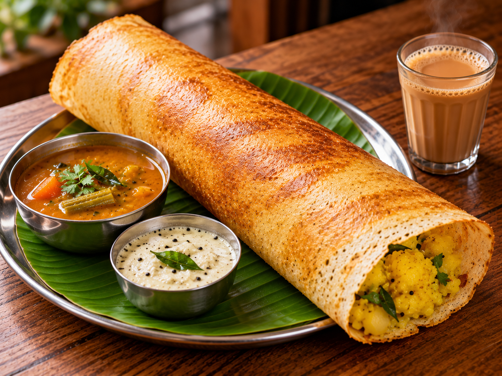

Tea
Freshly brewed Indian tea, served hot.
Price: Rs. 10
South Indian & Maharashtrian Kitchen
From crispy dosas to spicy misal pav, enjoy some of the favourites from South India and Maharashtra at IND1E.
Explore Our MenuEnjoy more of your favourites for less.

A cup of hot tea served with Mumbai-style vada pav.
Combo Price: Rs. 25

Fresh poha paired with a cup of hot tea.
Combo Price: Rs. 35

Masala dosa served with a cup of tea.
Combo Price: Rs. 55
Here's what people think about IND1E.
★★★★★ (5/5)
Tried the vada pav and tea. Both were good, and the prices are pretty reasonable too.
★★★★☆ (4/5)
The masala dosa was crispy and filling. Would have liked a little more chutney, but overall it was a good experience.
★★★★★ (5/5)
Had poha for breakfast and really liked it. Simple, tasty and easy on the pocket.
★★★★☆ (4/5)
Nice to have South Indian and Maharashtrian dishes in one place. Good options for a quick meal.
IND1E brings together popular dishes from South India and Maharashtra, all under one roof.
From a quick cup of tea to a plate of misal pav or freshly prepared dosa, our menu focuses on familiar flavours and food that fits your budget.
Monday - Sunday: 10:00 AM - 10:00 PM
Mumbai, Maharashtra, India
Email: contact@ind1e.com